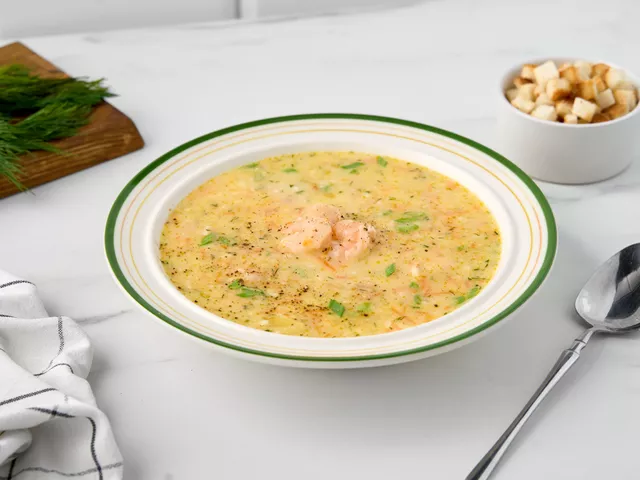
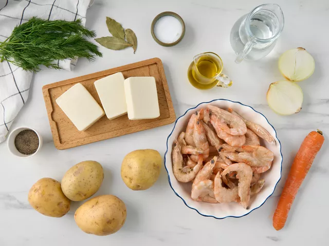
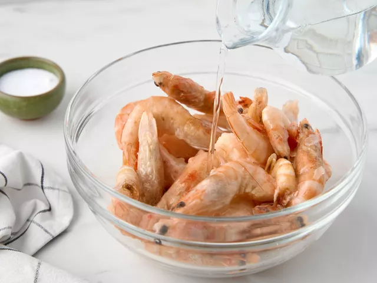
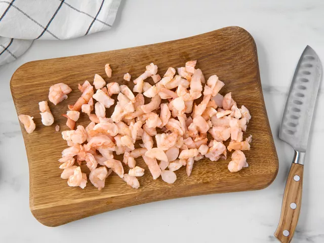
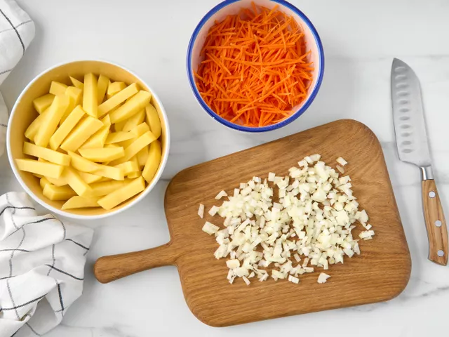
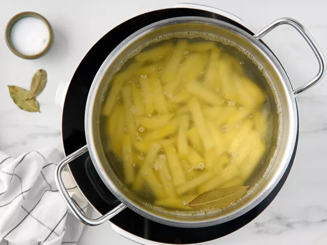
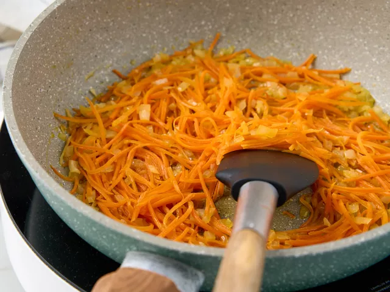
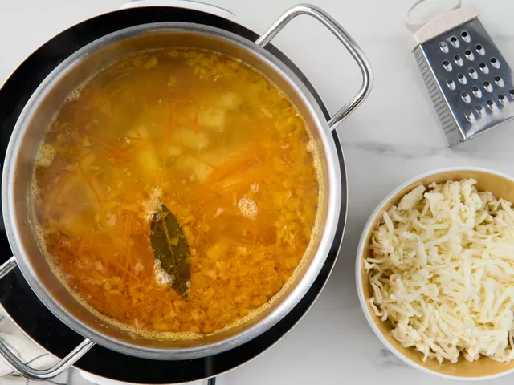
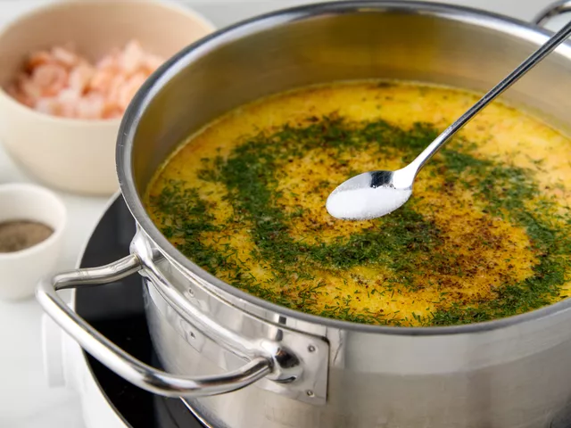
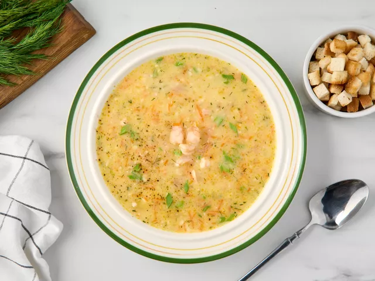

| Ингредиент | Количество | Вес (г) |
|
|
3 шт. | 54 |
| 2 л | 2000 | |
| 4 шт. | 480 | |
| 1 шт. | 80 | |
| 1 шт. | 100 | |
| 3 ст.л. | 51 | |
| - | 500 | |
| по вкусу | - | |
| по вкусу | - | |
| по вкусу | - | |
| 1 шт. | 1 |
| по желанию | |
| по желанию |

Помойте и почистите овощи. Размораживать креветки не нужно.

Выложите замороженные креветки в миску и влейте кипяток так, чтобы он их полностью покрыл. Оставьте на 3-4 минуты.

Слейте воду, а креветки почистите. Измельчите морепродукты.

Нарежьте лук мелким кубиком, а картофель небольшими брусочками. Морковь натрите на крупной терке.

Налейте в кастрюлю 2 л воды и на среднем огне доведите до кипения. Положите лаврушку и посолите.
Выложите в кипящую воду картофель. Убавьте огонь до слабого и варите 15 минут.

Тем временем разогрейте на сковороде масло и выложите лук. Обжарьте, помешивая, до прозрачности.
Добавьте морковь. Жарьте овощи вместе еще около 10 минут до мягкости.

Выложите обжаренные овощи в суп. Натрите на крупной терке плавленый сыр.
Выложите в кастрюлю и помешивайте до полного его растворения.

Измельчите зелень. Всыпьте ее в суп. Посолите и поперчите. Перемешайте. Добавьте креветки.
Как только суп закипит, снимите его с плиты и дайте настояться в течение 10 минут.

Налейте суп в порционные тарелки и дополните блюдо резанным зеленым луком и сухариками из белого хлеба.